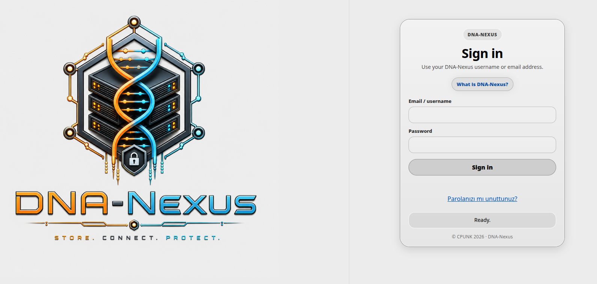
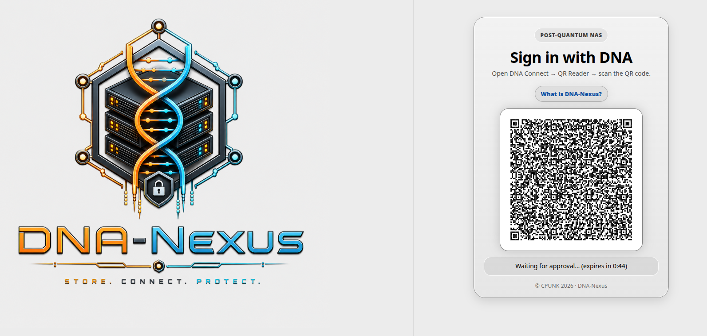
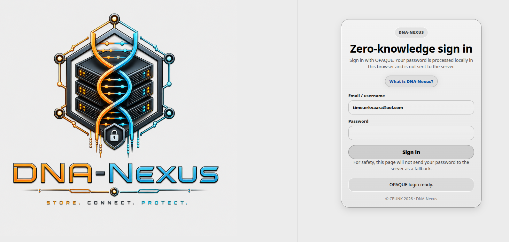
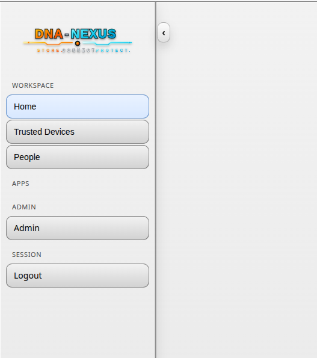

Ensimmäinen kirjautuminen
Use this page after the server installation is complete and the DNA-Nexus web interface is reachable. The first successful login on a fresh installation becomes the initial administrator account.
Open the login page
Open the DNA-Nexus server address in a browser. The address depends on the installation choices: it may be the local server address, a public hostname, a reverse proxy address or a Cloudflare Tunnel hostname.
Choose the login method
DNA-Nexus can show different login screens depending on the authentication method selected during installation. The examples below show the English login screens.
Username and password
Use this login screen when DNA-Nexus is configured for traditional username and password login.

QR / DNA Connect
Use this login screen when DNA-Nexus is configured for QR-based DNA Connect login. The user scans the QR code with a trusted DNA-Nexus compatible device.

OPAQUE zero-knowledge password
Use this login screen when DNA-Nexus is configured for OPAQUE zero-knowledge password login.

First administrator bootstrap
On a fresh installation, DNA-Nexus needs one initial administrator account. If there are no enabled admin users yet, the first successful login is used to create or enable the initial administrator.
After the first administrator exists, later users are not automatically promoted to administrator. New users may need to wait for administrator approval depending on the selected login method and server settings.
After login
-
Confirm that the dashboard opens
After login, confirm that the DNA-Nexus dashboard or main application view opens normally.
-
Open the administration area
After the first administrator login, the DNA-Nexus workspace may still look empty. This is expected on a new installation.

Before creating normal users or uploading content, open the Admin area from the left sidebar. The Admin area is used for the initial server setup, user management, approvals, storage settings and other administrator tasks.
-
Check users and approvals
Open the user administration or approvals page and confirm whether any new identities are waiting for approval.
-
Continue initial setup
After the first login works, continue with server settings, user creation and storage allocation.